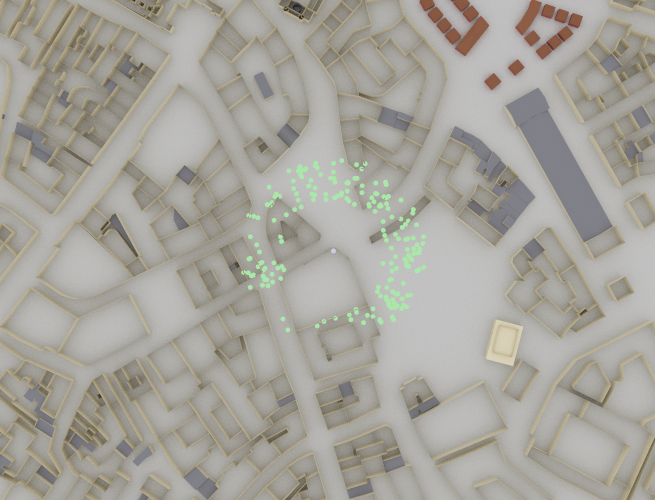
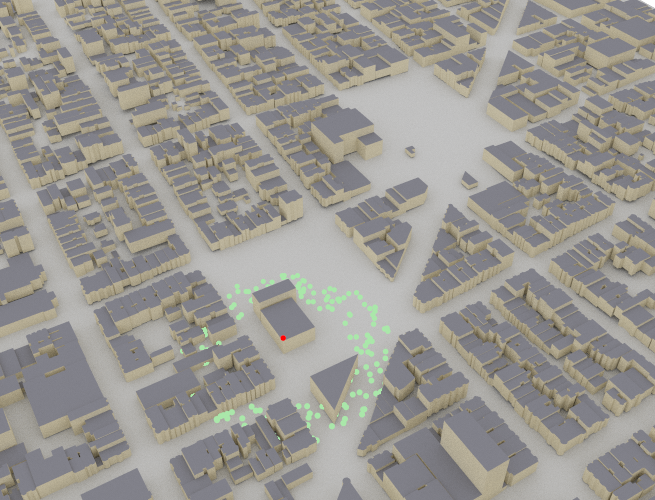

Radio Maps#
A radio map describes a metric, such as path gain, received signal strength (RSS), or signal-to-interference-plus-noise ratio (SINR) for a specific transmitter at every point on a measurement surface. In other words, for a given transmitter, it associates every point on a measurement surface with the channel gain, RSS, or SINR, that a receiver equipped with a dual-polarized isotropic antenna would observe at this point. A radio map is not uniquely defined as it depends on the transmit array and antenna pattern, the transmitter orientation, as well as the transmit precoding vector. Moreover, a radio map is not continuous but discrete because the measurement surface is quantized into small planar bins.
In Sionna, radio maps are generated using a radio map solver, which returns an instance of a specialized class derived from the abstract base class RadioMap. The built-in radio map solver can compute a radio map for either of the following:
A rectangular measurement plane grid, subdivided into equal-sized rectangular cells. In this case, an instance of
PlanarRadioMapis returned.A mesh, where each triangle of the mesh serves as a bin of the radio map. Here, an instance of
MeshRadioMapis returned.
Radio maps can be visualized by passing them as arguments to the functions render(), render_to_file(), or preview(). Additionally, PlanarRadioMap features a class method show().
A very useful feature is sample_positions() which allows sampling
of random positions within the scene that have sufficient path gain, RSS, or SINR from a specific transmitter.
- class sionna.rt.PlanarRadioMap(scene: sionna.rt.scene.Scene, cell_size: mitsuba.Point2f, center: mitsuba.Point3f | None = None, orientation: mitsuba.Point3f | None = None, size: mitsuba.Point2f | None = None)[source]#
Planar Radio Map
A planar radio map is defined by a measurement grid, i.e., a rectangular grid of cells. It is computed by a radio map solver.
- Parameters:
scene (sionna.rt.scene.Scene) – Scene for which the radio map is computed
center (mitsuba.Point3f | None) – Center of the radio map \((x,y,z)\) [m] as three-dimensional vector
orientation (mitsuba.Point3f | None) – Orientation of the radio map \((\alpha, \beta, \gamma)\) specified through three angles corresponding to a 3D rotation as defined in (3)
size (mitsuba.Point2f | None) – Size of the radio map [m]
cell_size (mitsuba.Point2f) – Size of a cell of the radio map [m]
Methods
- add_paths(e_fields: mitsuba.Vector4f, array_w: List[drjit.llvm.ad.Float], si: mitsuba.SurfaceInteraction3f, k_world: mitsuba.Vector3f, tx_indices: drjit.llvm.ad.UInt, active: drjit.llvm.ad.Bool, diffracted_paths: bool, solid_angle: drjit.llvm.ad.Float | None = None, tx_positions: mitsuba.Point3f | None = None, wedges: sionna.rt.utils.wedges.WedgeGeometry | None = None, diff_point: mitsuba.Point3f | None = None, wedges_samples_cnt: drjit.llvm.ad.UInt | None = None)[source]#
Adds the contribution of the paths that hit the measurement surface to the radio maps
The radio maps are updated in place.
- Parameters:
e_fields (mitsuba.Vector4f) – Electric fields as real-valued vectors of dimension 4
array_w (List[drjit.llvm.ad.Float]) – Weighting used to model the effect of the transmitter array
si (mitsuba.SurfaceInteraction3f) – Informations about the interaction with the measurement surface
k_world (mitsuba.Vector3f) – Directions of propagation of the incident paths
tx_indices (drjit.llvm.ad.UInt) – Indices of the transmitters from which the rays originate
active (drjit.llvm.ad.Bool) – Flags indicating if the paths should be added to the radio map
diffracted_paths (bool) – Flags indicating if the paths are diffracted
solid_angle (drjit.llvm.ad.Float | None) – Ray tubes solid angles [sr] for non-diffracted paths. Not required for diffracted paths.
tx_positions (mitsuba.Point3f | None) – Positions of the transmitters
wedges (sionna.rt.utils.wedges.WedgeGeometry | None) – Properties of the intersected wedges. Not required for non-diffracted paths.
diff_point (mitsuba.Point3f | None) – Position of the diffraction point on the wedge. Not required for non-diffracted paths.
wedges_samples_cnt (drjit.llvm.ad.UInt | None) – Number of samples on the wedge. Not required for non-diffracted paths.
- sample_positions(num_pos: int, metric: str = 'path_gain', min_val_db: float | None = None, max_val_db: float | None = None, min_dist: float | None = None, max_dist: float | None = None, tx_association: bool = True, center_pos: bool = False, seed: int = 1) Tuple[drjit.llvm.ad.TensorXf, drjit.llvm.ad.TensorXu][source]#
Samples random user positions in a scene based on a radio map
For a given radio map,
num_posrandom positions are sampled around each transmitter, such that the selected metric, e.g., SINR, is larger thanmin_val_dband/or smaller thanmax_val_db. Similarly,min_distandmax_distdefine the minimum and maximum distance of the random positions to the transmitter under consideration. By activating the flagtx_association, only positions are sampled for which the selected metric is the highest across all transmitters. This is useful if one wants to ensure, e.g., that the sampled positions for each transmitter provide the highest SINR or RSS.Note that due to the quantization of the radio map into cells it is not guaranteed that all above parameters are exactly fulfilled for a returned position. This stems from the fact that every individual cell of the radio map describes the expected average behavior of the surface within this cell. For instance, it may happen that half of the selected cell is shadowed and, thus, no path to the transmitter exists but the average path gain is still larger than the given threshold. Please enable the flag
center_posto sample only positions from the cell centers.import numpy as np import sionna from sionna.rt import load_scene, PlanarArray, Transmitter,\ RadioMapSolver, Receiver scene = load_scene(sionna.rt.scene.munich) # Configure antenna array for all transmitters scene.tx_array = PlanarArray(num_rows=1, num_cols=1, vertical_spacing=0.7, horizontal_spacing=0.5, pattern="iso", polarization="V") # Add a transmitters tx = Transmitter(name="tx", position=[-195,-240,30], orientation=[0,0,0]) scene.add(tx) solver = RadioMapSolver() rm = solver(scene, cell_size=(1., 1.), samples_per_tx=100000000) positions,_ = rm.sample_positions(num_pos=200, min_val_db=-100., min_dist=50., max_dist=80.) positions = positions.numpy() positions = np.squeeze(positions, axis=0) for i,p in enumerate(positions): rx = Receiver(name=f"rx-{i}", position=p, orientation=[0,0,0]) scene.add(rx) scene.preview(clip_at=10.);

The above example shows an example for random positions between 50m and 80m from the transmitter and a minimum path gain of -100 dB. Keep in mind that the transmitter can have a different height than the radio map which also contributes to this distance. For example if the transmitter is located 20m above the surface of the radio map and a
min_distof 20m is selected, also positions directly below the transmitter are sampled.- Parameters:
num_pos (int) – Number of returned random positions for each transmitter
metric ("path_gain" | "rss" | "sinr") – Metric to be considered for sampling positions
min_val_db (float | None) – Minimum value for the selected metric ([dB] for path gain and SINR; [dBm] for RSS). Positions are only sampled from cells where the selected metric is larger than or equal to this value. Ignored if None.
max_val_db (float | None) – Maximum value for the selected metric ([dB] for path gain and SINR; [dBm] for RSS). Positions are only sampled from cells where the selected metric is smaller than or equal to this value. Ignored if None.
min_dist (float | None) – Minimum distance [m] from transmitter for all random positions. Ignored if None.
max_dist (float | None) – Maximum distance [m] from transmitter for all random positions. Ignored if None.
tx_association (bool) – If True, only positions associated with a transmitter are chosen, i.e., positions where the chosen metric is the highest among all all transmitters. Else, a user located in a sampled position for a specific transmitter may perceive a higher metric from another TX.
center_pos (bool) – If True, all returned positions are sampled from the cell center (i.e., the grid of the radio map). Otherwise, the positions are randomly drawn from the surface of the cell.
seed (int)
- Returns:
Random positions \((x,y,z)\) [m] (shape:
[num_tx, num_pos, 3]) that are in cells fulfilling the configured constraints- Returns:
Cell indices (shape
[num_tx, num_pos, 2]) corresponding to the random positions in the format (column, row)
- show(metric: str = 'path_gain', tx: int | None = None, vmin: float | None = None, vmax: float | None = None, show_tx: bool = True, show_rx: bool = False) matplotlib.figure.Figure[source]#
Visualizes a radio map
The position of the transmitters is indicated by “+” markers. The positions of the receivers are indicated by “x” markers.
- Parameters:
metric ("path_gain" | "rss" | "sinr") – Metric to show
tx (int | None) – Index of the transmitter for which to show the radio map. If None, the maximum value over all transmitters for each cell is shown.
vmin (float | None) – Defines the minimum value [dB] for the colormap covers. If set to None, then the minimum value across all cells is used.
vmax (float | None) – Defines the maximum value [dB] for the colormap covers. If set to None, then the maximum value across all cells is used.
show_tx (bool) – If set to True, then the position of the transmitters are shown.
show_rx (bool) – If set to True, then the position of the receivers are shown.
- Returns:
Figure showing the radio map
- show_association(metric: str = 'path_gain', show_tx: bool = True, show_rx: bool = False, color_map: str | numpy.ndarray | None = None) matplotlib.figure.Figure[source]#
Visualizes cell-to-tx association for a given metric
The positions of the transmitters and receivers are indicated by “+” and “x” markers, respectively.
- Parameters:
metric ("path_gain" | "rss" | "sinr") – Metric to show
show_tx (bool) – If set to True, then the position of the transmitters are shown.
show_rx (bool) – If set to True, then the position of the receivers are shown.
color_map (str | numpy.ndarray | None) – Either the name of a Matplotlib colormap or a NumPy array of shape (num_tx, 3) containing the RGB values for the colors of the transmitters. If None, a default color map with the right number of colors is generated.
- Returns:
Figure showing the cell-to-transmitter association
- tx_association(metric: str = 'path_gain') drjit.llvm.ad.TensorXi[source]#
Computes cell-to-transmitter association
Each cell is associated with the transmitter providing the highest metric, such as path gain, received signal strength (RSS), or SINR.
- Parameters:
metric ("path_gain" | "rss" | "sinr") – Metric to be used
- Returns:
Cell-to-transmitter association
Attributes
- property cell_centers#
Positions of the centers of the cells in the global coordinate system
- property cell_size#
Size of a cell of the radio map [m]
- Type:
- property cells_per_dim#
Number of cells per dimension
- Type:
- property center#
Center of the radio map in the global coordinate system
- Type:
- property measurement_surface#
Mitsuba rectangle corresponding to the radio map measurement surface
- Type:
- property orientation#
Orientation of the radio map \((\alpha, \beta, \gamma)\) specified through three angles corresponding to a 3D rotation as defined in (3). An orientation of \((0,0,0)\) corresponds to a radio map that is parallel to the XY plane.
- Type:
- property path_gain#
Path gains across the radio map from all transmitters [unitless, linear scale]
- property rx_cell_indices#
Computes and returns the cell index positions corresponding to receivers in the format (column, row)
- Type:
- property size#
Size of the radio map [m]
- Type:
- property tx_cell_indices#
Cell index position of each transmitter in the format (column, row)
- Type:
- class sionna.rt.MeshRadioMap(scene: sionna.rt.scene.Scene, meas_surface: mitsuba.Mesh)[source]#
Mesh Radio Map
A mesh-based radio map is computed by a radio map solver for a measurement surface defined by a mesh. Each triangle of the mesh serves as a bin of the radio map.
- Parameters:
scene (sionna.rt.scene.Scene) – Scene for which the radio map is computed
meas_surface (mitsuba.Mesh) – Mesh to be used as the measurement surface
Methods
- add_paths(e_fields: mitsuba.Vector4f, array_w: List[drjit.llvm.ad.Float], si: mitsuba.SurfaceInteraction3f, k_world: mitsuba.Vector3f, tx_indices: drjit.llvm.ad.UInt, active: drjit.llvm.ad.Bool, diffracted_paths: bool, solid_angle: drjit.llvm.ad.Float | None = None, tx_positions: mitsuba.Point3f | None = None, wedges: sionna.rt.utils.wedges.WedgeGeometry | None = None, diff_point: mitsuba.Point3f | None = None, wedges_samples_cnt: drjit.llvm.ad.UInt | None = None)[source]#
Adds the contribution of the paths that hit the measurement surface to the radio maps
The radio maps are updated in place.
- Parameters:
e_fields (mitsuba.Vector4f) – Electric fields as real-valued vectors of dimension 4
array_w (List[drjit.llvm.ad.Float]) – Weighting used to model the effect of the transmitter array
si (mitsuba.SurfaceInteraction3f) – Informations about the interaction with the measurement surface
k_world (mitsuba.Vector3f) – Directions of propagation of the incident paths
tx_indices (drjit.llvm.ad.UInt) – Indices of the transmitters from which the rays originate
active (drjit.llvm.ad.Bool) – Flags indicating if the paths should be added to the radio map
diffracted_paths (bool) – Flags indicating if the paths are diffracted
solid_angle (drjit.llvm.ad.Float | None) – Ray tubes solid angles [sr] for non-diffracted paths. Not required for diffracted paths.
tx_positions (mitsuba.Point3f | None) – Positions of the transmitters
wedges (sionna.rt.utils.wedges.WedgeGeometry | None) – Properties of the intersected wedges. Not required for non-diffracted paths.
diff_point (mitsuba.Point3f | None) – Position of the diffraction point on the wedge. Not required for non-diffracted paths.
wedges_samples_cnt (drjit.llvm.ad.UInt | None) – Number of samples on the wedge. Not required for non-diffracted paths.
- sample_positions(num_pos: int, metric: str = 'path_gain', min_val_db: float | None = None, max_val_db: float | None = None, min_dist: float | None = None, max_dist: float | None = None, tx_association: bool = True, center_pos: bool = False, seed: int = 1) Tuple[drjit.llvm.ad.TensorXf, drjit.llvm.ad.TensorXu][source]#
Samples random user positions in a scene based on a radio map
For a given radio map,
num_posrandom positions are sampled around each transmitter, such that the selected metric, e.g., SINR, is larger thanmin_val_dband/or smaller thanmax_val_db. Similarly,min_distandmax_distdefine the minimum and maximum distance of the random positions to the transmitter under consideration. By activating the flagtx_association, only positions are sampled for which the selected metric is the highest across all transmitters. This is useful if one wants to ensure, e.g., that the sampled positions for each transmitter provide the highest SINR or RSS.Note that due to the quantization of the radio map into cells it is not guaranteed that all above parameters are exactly fulfilled for a returned position. This stems from the fact that every individual cell of the radio map describes the expected average behavior of the surface within this cell. For instance, it may happen that half of the selected cell is shadowed and, thus, no path to the transmitter exists but the average path gain is still larger than the given threshold. Please enable the flag
center_posto sample only positions from the cell centers.import numpy as np import sionna from sionna.rt import load_scene, PlanarArray, Transmitter, \ RadioMapSolver, Receiver, transform_mesh scene = load_scene(sionna.rt.scene.san_francisco) # Configure antenna array for all transmitters scene.tx_array = PlanarArray(num_rows=1, num_cols=1, vertical_spacing=0.7, horizontal_spacing=0.5, pattern="iso", polarization="V") # Add a transmitters tx = Transmitter(name="tx", position=[15.9,121.2,25], orientation=[0,0,0], display_radius=2.0) scene.add(tx) # Create a measurement surface by cloning the terrain # and elevating it by 1.5 meters measurement_surface = scene.objects["Terrain"].clone(as_mesh=True) transform_mesh(measurement_surface, translation=[0,0,1.5]) solver = RadioMapSolver() rm = solver(scene, cell_size=(1., 1.), measurement_surface=measurement_surface, samples_per_tx=100000000) positions,_ = rm.sample_positions(num_pos=200, min_val_db=-100., min_dist=50., max_dist=80.) positions = positions.numpy() positions = np.squeeze(positions, axis=0) for i,p in enumerate(positions): rx = Receiver(name=f"rx-{i}", position=p, orientation=[0,0,0], display_radius=2.0) scene.add(rx) scene.preview();

The above example shows an example for random positions between 50m and 80m from the transmitter and a minimum path gain of -100 dB. Keep in mind that the transmitter can have a different height than the radio map which also contributes to this distance. For example if the transmitter is located 20m above the surface of the radio map and a
min_distof 20m is selected, also positions directly below the transmitter are sampled.- Parameters:
num_pos (int) – Number of returned random positions for each transmitter
metric ("path_gain" | "rss" | "sinr") – Metric to be considered for sampling positions
min_val_db (float | None) – Minimum value for the selected metric ([dB] for path gain and SINR; [dBm] for RSS). Positions are only sampled from cells where the selected metric is larger than or equal to this value. Ignored if None.
max_val_db (float | None) – Maximum value for the selected metric ([dB] for path gain and SINR; [dBm] for RSS). Positions are only sampled from cells where the selected metric is smaller than or equal to this value. Ignored if None.
min_dist (float | None) – Minimum distance [m] from transmitter for all random positions. Ignored if None.
max_dist (float | None) – Maximum distance [m] from transmitter for all random positions. Ignored if None.
tx_association (bool) – If True, only positions associated with a transmitter are chosen, i.e., positions where the chosen metric is the highest among all all transmitters. Else, a user located in a sampled position for a specific transmitter may perceive a higher metric from another TX.
center_pos (bool) – If True, all returned positions are sampled from the cell center (i.e., the grid of the radio map). Otherwise, the positions are randomly drawn from the surface of the cell.
seed (int)
- Returns:
Random positions \((x,y,z)\) [m] (shape:
[num_tx, num_pos, 3]) that are in cells fulfilling the configured constraints- Returns:
Cell indices (shape
[num_tx, num_pos]) corresponding to the random positions
Attributes
- property cell_centers#
Positions of the centers of the cells in the global coordinate system
- property measurement_surface#
Mitsuba shape corresponding to the radio map measurement surface
- Type:
- property path_gain#
Path gains across the radio map from all transmitters [unitless, linear scale]
- class sionna.rt.RadioMap(scene: sionna.rt.scene.Scene)[source]#
Abstract base class for radio maps
A radio map is generated for the loaded scene for all transmitters using a radio map solver. Please refer to the documentation of this module for further details.
- Parameters:
scene (sionna.rt.scene.Scene) – Scene for which the radio map is computed
Methods
- abstractmethod add_paths(e_fields: mitsuba.Vector4f, array_w: List[drjit.llvm.ad.Float], si: mitsuba.SurfaceInteraction3f, k_world: mitsuba.Vector3f, tx_indices: drjit.llvm.ad.UInt, active: drjit.llvm.ad.Bool, diffracted_paths: bool, solid_angle: drjit.llvm.ad.Float | None = None, tx_positions: mitsuba.Point3f | None = None, wedges: sionna.rt.utils.wedges.WedgeGeometry | None = None, diff_point: mitsuba.Point3f | None = None, wedges_samples_cnt: drjit.llvm.ad.UInt | None = None)[source]#
Adds the contribution of the paths that hit the measurement surface to the radio maps
The radio maps are updated in place.
- Parameters:
e_fields (mitsuba.Vector4f) – Electric fields as real-valued vectors of dimension 4
array_w (List[drjit.llvm.ad.Float]) – Weighting used to model the effect of the transmitter array
si (mitsuba.SurfaceInteraction3f) – Informations about the interaction with the measurement surface
k_world (mitsuba.Vector3f) – Directions of propagation of the incident paths
tx_indices (drjit.llvm.ad.UInt) – Indices of the transmitters from which the rays originate
active (drjit.llvm.ad.Bool) – Flags indicating if the paths should be added to the radio map
diffracted_paths (bool) – Flags indicating if the paths are diffracted
solid_angle (drjit.llvm.ad.Float | None) – Ray tubes solid angles [sr] for non-diffracted paths. Not required for diffracted paths.
tx_positions (mitsuba.Point3f | None) – Positions of the transmitters
wedges (sionna.rt.utils.wedges.WedgeGeometry | None) – Properties of the intersected wedges. Not required for non-diffracted paths.
diff_point (mitsuba.Point3f | None) – Position of the diffraction point on the wedge. Not required for non-diffracted paths.
wedges_samples_cnt (drjit.llvm.ad.UInt | None) – Number of samples on the wedge. Not required for non-diffracted paths.
- cdf(metric: str = 'path_gain', tx: int | None = None, bins: int = 200) Tuple[matplotlib.figure.Figure, drjit.llvm.ad.TensorXf, drjit.llvm.ad.Float][source]#
Computes and visualizes the CDF of a metric of the radio map
- Parameters:
- Returns:
Figure showing the CDF
- Returns:
Data points for the chosen metric
- Returns:
Cummulative probabilities for the data points
- sample_cells(num_cells: int, metric: str = 'path_gain', min_val_db: float | None = None, max_val_db: float | None = None, min_dist: float | None = None, max_dist: float | None = None, tx_association: bool = True, seed: int = 1) Tuple[drjit.llvm.ad.TensorXu][source]#
Samples random cells in a radio map
For a given radio map,
num_cellsrandom cells are sampled such that the selected metric, e.g., SINR, is larger thanmin_val_dband/or smaller thanmax_val_db. Similarly,min_distandmax_distdefine the minimum and maximum distance of the random cells centers to the transmitter under consideration. By activating the flagtx_association, only cells for which the selected metric is the highest across all transmitters are sampled. This is useful if one wants to ensure, e.g., that the sampled cells for each transmitter provide the highest SINR or RSS.- Parameters:
num_cells (int) – Number of returned random cells for each transmitter
metric ("path_gain" | "rss" | "sinr") – Metric to be considered for sampling cells
min_val_db (float | None) – Minimum value for the selected metric ([dB] for path gain and SINR; [dBm] for RSS). Only cells for which the selected metric is larger than or equal to this value are sampled. Ignored if None.
max_val_db (float | None) – Maximum value for the selected metric ([dB] for path gain and SINR; [dBm] for RSS). Only cells for which the selected metric is smaller than or equal to this value are sampled. Ignored if None.
min_dist (float | None) – Minimum distance [m] from transmitter for all random cells. Ignored if None.
max_dist (float | None) – Maximum distance [m] from transmitter for all random cells. Ignored if None.
tx_association (bool) – If True, only cells associated with a transmitter are chosen, i.e., cells where the chosen metric is the highest among all all transmitters. Else, a user located in a sampled cell for a specific transmitter may perceive a higher metric from another TX.
seed (int) – Seed for the random number generator
- Returns:
Cell indices (shape
[num_tx, num_cells]) corresponding to the random cells
- transmitter_radio_map(metric: str = 'path_gain', tx: int | None = None) drjit.llvm.ad.TensorXf[source]#
Returns the radio map values corresponding to transmitter
txand a specificmetricIf
txis None, then returns for each cell the maximum value accross the transmitters.- Parameters:
metric ("path_gain" | "rss" | "sinr") – Metric for which to return the radio map
tx (int | None)
- tx_association(metric: str = 'path_gain') drjit.llvm.ad.TensorXi[source]#
Computes cell-to-transmitter association.
Each cell is associated with the transmitter providing the highest metric, such as path gain, received signal strength (RSS), or SINR.
- Parameters:
metric ("path_gain" | "rss" | "sinr") – Metric to be used
- Returns:
Cell-to-transmitter association. The value -1 indicates that there is no coverage for the cell.
Attributes
- abstract property cell_centers#
Positions of the centers of the cells in the global coordinate system.
The type of this property depends on the subclass.
- abstract property measurement_surface#
Mitsuba shape corresponding to the radio map measurement surface
- Type:
- abstract property path_gain#
Path gains across the radio map from all transmitters [unitless, linear scale]
The shape of the tensor depends on the subclass.
- Type:
mi.TensorXfwith shape [num_tx, …], where the specific dimensions are defined by the subclass.
- property rss#
Received signal strength (RSS) across the radio map from all transmitters [W]
The shape of the tensor depends on the subclass.
- Type:
mi.TensorXfwith shape [num_tx, …], where the specific dimensions are defined by the subclass.
- property sinr#
SINR across the radio map from all transmitters [unitless, linear scale]
The shape of the tensor depends on the subclass.
- Type:
mi.TensorXfwith shape [num_tx, …], where the specific dimensions are defined by the subclass.